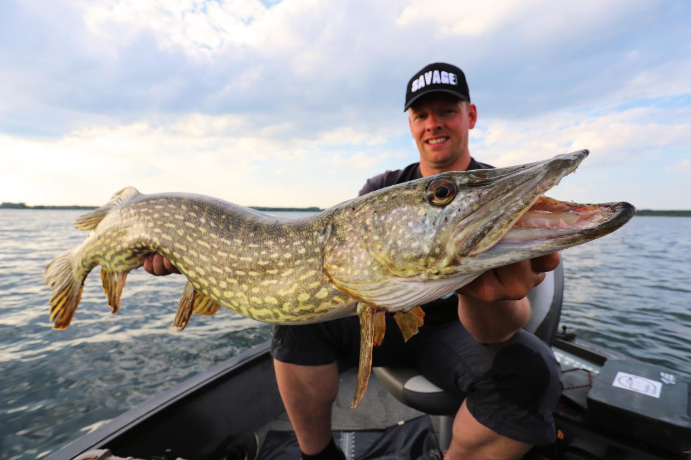
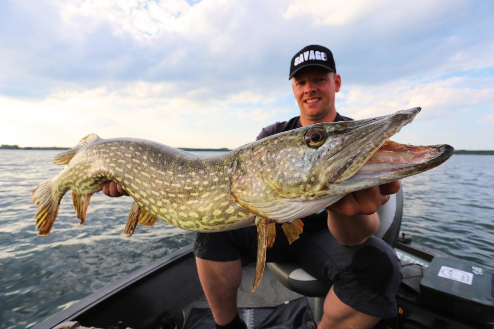

| Name | Region | diet | Trophy size |
|---|---|---|---|
| Carp | Europe and Asia | Worms,corn,bread and cheese | 20kg+ |
| Pike | Britain,Ireland and most of Eastern Europpe,Canada and United States | Fish | 15kg+ |
| Bass | North America | Fish and frogs | 1kg+ |
Carp
The cypriniformes (family Cyprinidae) are traditionally grouped with the Characiformes, Siluriformes, and Gymnotiformes to create the superorder Ostariophysi, since these groups share 6 some common features. These features include being found predominantly in fresh water and possessing Weberian ossicles, an anatomical structure derived from the first five anterior-most vertebrae, and their corresponding ribs and neural crests. The third anterior-most pair of ribs is in contact with the extension of the labyrinth and the posterior with the swim bladder. The function is poorly understood, but this structure is presumed to take part in the transmission of vibrations from the swim bladder to the labyrinth and in the perception of sound, which would explain why the Ostariophysi have such a great capacity for hearing.[1] Carp have been domesticated for decoration in their koi form Most cypriniformes have scales and teeth on the inferior pharyngeal bones which may be modified in relation to the diet. Tribolodon is the only cyprinid genus which tolerates salt water. Several species move into brackish water but return to fresh water to spawn. All of the other cypriniformes live in continental waters and have a wide geographical range.[1] Some consider all cyprinid fishes carp[by whom?], and the family Cyprinidae itself is often known as the carp family. In colloquial use, carp usually refers only to several larger cyprinid species such as Cyprinus carpio (common carp), Carassius carassius (Crucian carp), Ctenopharyngodon idella (grass carp), Hypophthalmichthys molitrix (silver carp), and Hypophthalmichthys nobilis (bighead carp). Carp have long been an important food fish to humans. Several species such as the various goldfish breeds and the domesticated common carp variety known as koi have been popular ornamental fishes. As a result, carp have been introduced to various locations, though with mixed results. Several species of carp are considered invasive species in the United States,[2] and, worldwide, large sums of money are spent on carp control.[3] At least some species of carp are able to survive for months with practically no oxygen (for example under ice or in stagnant, scummy water) by metabolizing glycogen to form lactic acid which is then converted into ethanol and carbon dioxide. The ethanoldiffuses into the surrounding water through the gills
Pike
Northern pike are most often olive green, shading from yellow to white along the belly. The flank is marked with short, light bar-like spots and a few to many dark spots on the fins. Sometimes, the fins are reddish. Younger pike have yellow stripes along a green body; later, the stripes divide into light spots and the body turns from green to olive green. The lower half of the gill cover lacks scales, and it has large sensory pores on its head and on the underside of its lower jaw which are part of the lateral line system. Unlike the similar-looking and closely related muskellunge, the northern pike has light markings on a dark body background and fewer than six sensory pores on the underside of each side of the lower jaw. Drawing of northern pike A hybrid between northern pike and muskellunge is known as a tiger muskellunge (Esox masquinongy × lucius or Esox lucius × masquinongy,[6] depending on the sex of each of the contributing species). In the hybrids, the males are invariably sterile, while females are often fertile, and may back-cross with the parent species.[7] Another form of northern pike, the silver pike, is not a subspecies but rather a mutation that occurs in scattered populations. Silver pike, sometimes called silver muskellunge, lack the rows of spots and appear silver, white, or silvery-blue in color.[8] When ill, silver pike have been known to display a somewhat purplish hue; long illness is also the most common cause of male sterility. 7 In Italy, the newly identified species Esox cisalpinus ("southern pike") was long thought to be a color variation of the northern pike, but was in 2011 announced to be a species of its own.
Bass
Bass (/bæs/) is a common name shared by many species of fish. The term encompasses both freshwater and marine species, all belonging to the large order Perciformes or perch-like fishes. The word bass comes from Middle English bars, meaning 'perch'.